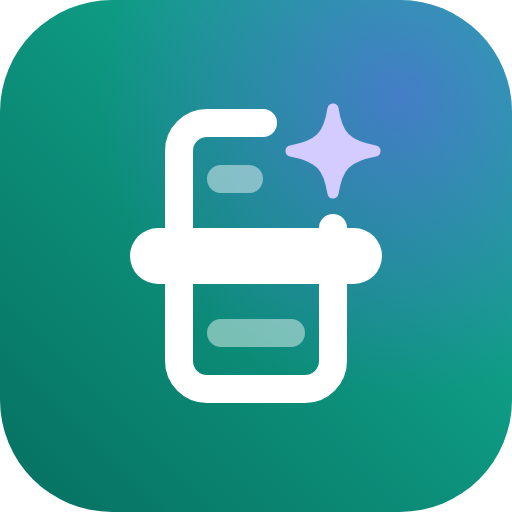
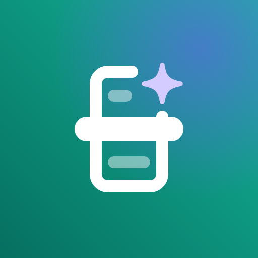
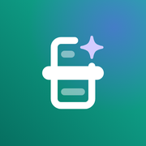

三个版本：彩色 · 单色（墨）· 反白（深底）
单色用于 Word 报告封面与页眉、打印件；反白用于深色界面。深色模式不是反色，青和紫各提亮一档。
一页文件，正中一条横线伸出纸边、保持水平：它是遮住敏感内容的脱敏条，是放平了称的秤杆，也是初审找出的那一行；右上角的灵紫星点是模型——它只在角上，看到的只是遮住后的文件。文件清单与使用规定见同目录 README.md。
≥64px 用大稿（带纸内细线）；20～63px 用标准稿；≤20px 用 16 网格小稿（星点改圆点）。
单色用于 Word 报告封面与页眉、打印件；反白用于深色界面。深色模式不是反色，青和紫各提亮一档。
横排：图形 + 商衡 + SI，最小 96px 宽；竖排：图形在上。“SI” 与图形同色。
渐变只用在应用图标底块：深青到衡青，右上角一抹灵紫光。favicon 用小稿，深色标签栏下自动换亮一档。

512 / 192 · any
512 maskable（圆形遮罩下）
180 · iOS四周留白不小于横线高度的 2 倍（虚线框）。开场：横线从中间向两边展开，星点随后亮起，共 700ms；精简档直接显示终态。
拉伸、改色、加阴影、旋转（404 彩蛋除外）、放在花底上。
| 位置 | 用哪一个 | 尺寸 |
|---|---|---|
| 侧栏顶部 | wordmark-h（随主题彩色 / 反白），收起时只留图形 | 图形 28px |
| 登录页品牌区 | mark-lg-inverse（深色品牌区），带开场动效 | 96px |
| 首页问候 | mark（随主题），带开场动效 | 44px |
| 浏览器标签 | favicon.svg（自带深色适配） | 16px |
| 安装到桌面 / 手机 | app-icon-192 / 512 / 512-maskable、apple-touch-icon-180 | — |
| Word 报告封面与页眉 | wordmark-h-mono / mark-mono | 页眉高 10mm 内 |
| 404 页 | mark-lg，横线旋转 −6° | 128px |